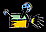
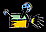

{kind=link}
 See the animation of events for this volcanic eruption [194k GIF Animation].

| Mount St Helens | Long Valley | |
| On May 18, 1980, after a long period of rest, this quiet mountain in Washington provided detailed observations on
the mechanics of highly explosive eruptions. The towering pine trees of this once-quiet mountain were toppled over like toothpicks.
 See the animation of events for this volcanic eruption [194k GIF Animation]. |
This field seismometer measures earthquakes associated with subsurface volcanic forces and may help to predict future events. It sits on a plateau known as the "Volcanic Tableland" formed by a major eruption 600,000 years ago. |
|
| -- [full size image] -- | ||
| San Francisco Peaks | MacDougal Crater | |
| Scientists believe that the volcanic eruptions several million years ago that shaped this mountain in northern Arizona were very similar to the ones onserved at Mount St. Helens. | When hot volcanic magma encounters ground water, these explosive eruptions can form deep craters seen just south of Arizona in the Pincate Volcanic region of Mexico. | |
{kind=link}
{kind=link}